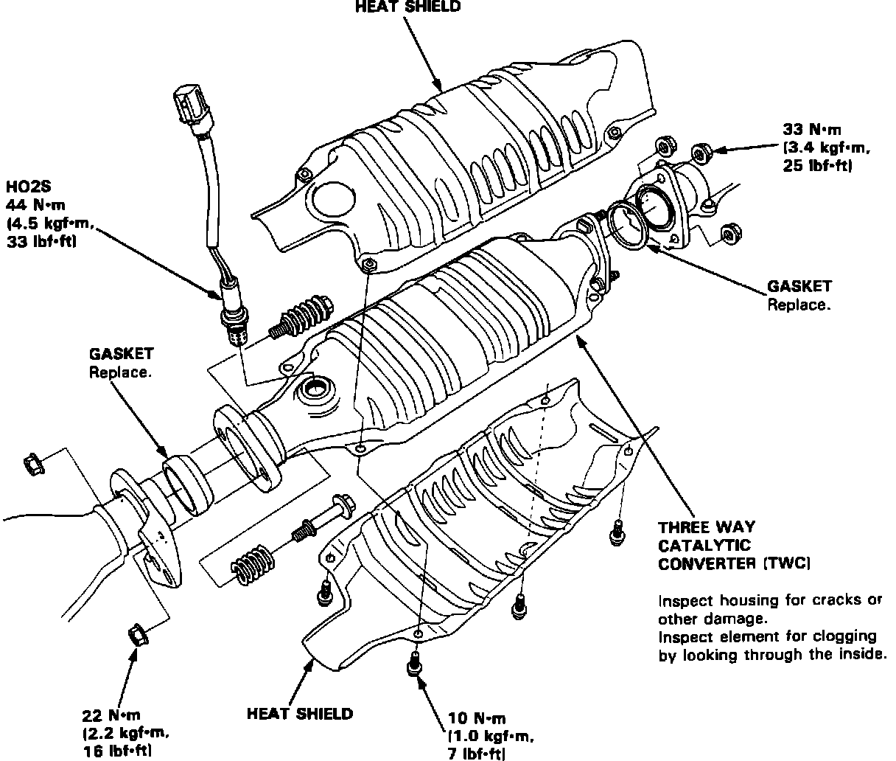

Visual Inspection Procedures
Three Way Catalytic Converter:

CATALYTIC CONVERTER INSPECTION
1. Visually inspect exterior of converter. If severe damage is noted, such as dented, crushed or rusted out shell, replace converter.
2. Whenever converter is removed from vehicle, Shine a light through the outlet, observe through the converter to determine if the converter is plugged by carbon buildup or lead contamination.
3. Gently shake the catalytic converter and listen for signs of loose components.
^ If element is clogged, melted or otherwise damaged, replace converter.